GITGUI · WINDOWS PORTABLE · M1–M4
GITGUI 操作手冊
適用版本：0.7.1；套件與手冊版本：0.7.2（程式功能相同）。Windows x64 免安裝包內含 Portable Git、Git LFS、SSH 工具及 .NET 執行環境。已發布的 0.7.0 通過 M4 正式效能驗收，完整結果見 效能報告，v0.7.2 下載與校驗檔見 Release。
v0.7.2 是圖文手冊更新套件，收錄本機提交、單檔／整個專案還原、分支與合併範例，以及第 23.4 節新增的 10 張還原操作截圖。程式、Runtime 與 Portable Git 沿用已驗證的 v0.7.1 檔案；build-info.json 保留真正程式建置版本與來源，release-info.json 記錄本次套件及文件來源。新套件的測試、逐檔校驗與 SHA-256 以本版 Release 附件為準。
v0.7.1 新增「已有檔案資料夾初始化」與初始化時的本機提交者設定，通過 504 項 Windows 本機自動化回歸與解壓啟動檢查。下列第 20.2 節說明此流程；v0.7.0 的舊截圖未顯示新增的姓名、電子郵件與瀏覽按鈕。既有正式效能數據仍僅對應報告中記錄的受測版本。
第一次將專案備份到 GitHub，請從第 20 章的完整範例開始；之後修改專案並再次上傳，請看第 21 章。
第 20、21 章保留 16 張實際操作截圖與點擊標示。視窗大小或配色不同時，請依同名按鈕操作；GitHub 位置參考圖沿用現有 GITGUI 倉庫。
只在本機管理版本，請看第 22 章；單檔／整個專案還原，請看第 23 章；建立分支、合併回主分支與處理衝突，請看第 24 章。這些操作都不需要先設定 Server 或 GitHub。
第 23.4 節提供 10 張實際操作截圖與點擊標示，示範從第 5 版還原到第 2 版，以及如何從備用分支取回第 5 版。點擊圖片可開啟原尺寸查看。
1. 解壓縮與啟動
- 從本專案 v0.7.2 Release 下載
GITGUI-0.7.2-win-x64-portable.zip。
- 在檔案總管選擇「全部解壓縮」，保留整個資料夾結構。
- 開啟解壓縮資料夾，執行
GITGUI.vbs。請勿直接從 ZIP 內執行。
- 第一次使用可先到「Git 設定」確認執行檔來源為同資料夾下的
PortableGit\cmd\git.exe。
不必另外安裝 Git 或 .NET。移動程式時，請搬移整個資料夾。簽章、HTTPS 登入、SSH 遠端連線仍使用你自己的身分設定與金鑰。
預設啟動方式需要 Windows 內建的 Windows Script Host。若你的環境不允許執行 VBS，可改用 GitGui.App.exe；v0.7.0 的 1.5 秒冷啟動驗收使用 GITGUI.vbs，備用方式的啟動時間可能不同。請保留 GitGui.Host.dll、GitGui.App.r2r.dll、PortableGit 與其他隨附檔案。
若 Windows 顯示下載程式的信任提示，先確認下載自本專案 Release，並核對 SHA256SUMS.txt；此版本未提供程式碼簽章。
Get-FileHash -LiteralPath 'C:\下載\GITGUI-0.7.2-win-x64-portable.zip' -Algorithm SHA256
上方 C:\下載 是範例，請換成實際下載位置。
2. 畫面與外觀
主畫面左側選擇最近倉庫與 refs，中間切換工作區、提交圖與快照並輸入提交訊息，右側檢視差異、衝突與提交詳情。操作面板可查看實際 Git 指令與輸出。
「外觀」可選擇 Graphite、Midnight、Forest、Porcelain 四種配色。主工具列的 EN 選項可切換繁體中文或英文，會同步更新主視窗、進階、倉庫工具與設定視窗的介面資源。外觀、語系與自訂快捷鍵會保留供下次啟動使用。Git 原始輸出、使用者輸入的分支名稱與提交訊息維持原文。
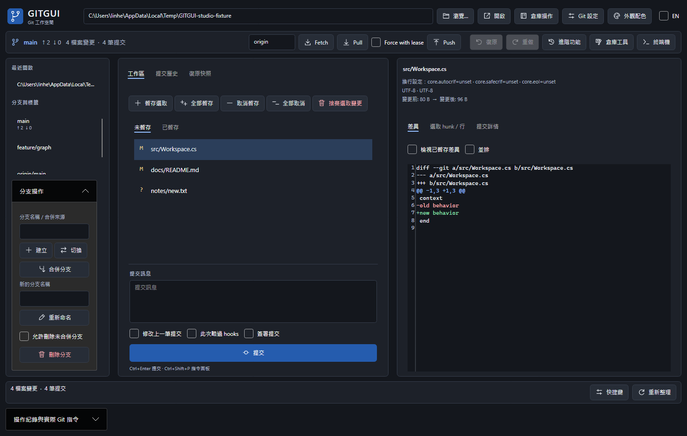
3. 開啟、建立或複製倉庫
- 已有本機倉庫：按「瀏覽」選擇工作目錄，或直接輸入路徑後按「開啟」。
- 建立新倉庫：按「倉庫操作」，瀏覽或填寫專案資料夾，再按「初始化倉庫」；預設初始分支為
main。v0.7.1也接受已有檔案的資料夾，並保留原檔案，詳見第 20.2 節。
- 從遠端複製：在「倉庫操作」選擇「Clone」，輸入 HTTPS、SSH 或本機倉庫來源，以及全新或空白的目的資料夾。
首次寫入陌生倉庫前，程式會詢問是否信任，並列出可能執行外部程式的 hooks、filters、SSH 或憑證設定。確認來源後再同意。程式不會自動修改 safe.directory。
Git 作者資料由 Git 設定提供；若尚未設定，可在內建終端機輸入：
git config --local user.name "你的名字"
git config --local user.email "you@example.com"
4. 修改、暫存與提交
- 在編輯器修改工作目錄內的檔案。
- 回到 GITGUI，按重新整理，或讓視窗重新取得焦點。
- 選擇變更檔案，檢視差異；按「暫存」將選取檔案加入 index。
- 文字差異可選擇 hunk 或行來暫存／取消暫存；二進位檔以整檔處理。
- 輸入提交訊息，按「提交」。只有已暫存的內容進入提交。
「修改上一筆」會重寫最新提交。使用前先確認這筆提交是否已分享給其他人。「略過 hooks」只對本次操作生效；預設不勾選。
「捨棄變更」會替換選取的工作檔案，執行前有確認與快照。請先看清楚檔案清單。
5. 分支、同步與衝突
- 建立分支：輸入分支名稱後建立，再切換到該分支。
- 切換分支：選取本機分支、遠端追蹤分支或提交；切換提交會進入 detached HEAD。
- Fetch：取得遠端最新 refs，不合併工作目錄。
- Pull：取得遠端內容後合併，遵守
pull.ff；若倉庫設定 rebase，程式會先確認本次改用 merge。
- Push：將目前分支推送到選定遠端。強制推送使用
--force-with-lease --force-if-includes；受保護分支需要輸入分支名稱確認。
遇到衝突，選擇衝突檔案，使用三方編輯、整檔 ours／theirs 或外部 mergetool。檢查結果後「標記已解決」，再完成提交或到「進階」繼續操作。二進位與符號連結衝突使用整檔選擇。
6. 快照復原與重做
會修改歷史或替換內容的操作，依功能自動建立快照。主畫面快照清單、操作後的「復原」，或工具視窗的「還原最近快照」可還原本地狀態。
- 先讀取快照的時間與操作名稱。
- 按還原並確認。程式會先保存目前狀態作為重做快照。
- 還原後重新整理，確認 HEAD、分支、暫存區與工作檔案。
- 如需重做，選擇剛才還原前自動建立的快照再還原。
快照保存在倉庫的 Git 物件與內部 refs，清單索引保存在應用程式 SQLite。它是操作復原工具，請另做獨立備份；刪除整個倉庫也會失去這些快照。遠端已推送內容不會因本地還原而撤回。
復原會重建index快取。若曾改動LFS追蹤規則或.gitattributes，Git重新計算後的變更標記可能與先前快取不同；請檢視工作檔與暫存內容後再決定下一步。
子模組快照僅處理父倉庫，詳細邊界見第 9 節；工作樹、LFS 與 bisect 依各自方式處理。快照還原若遇到 index/ref 鎖或可能覆蓋未保存資料，會拒絕執行，請先處理原始原因。
更新／停用子模組或移除工作樹時，若 index 有 assume-unchanged 或 skip-worktree flags，程式會保守拒絕，因為 Git status 可能隱藏未保存的內容。先另行備份並清除相關 flags，再重試。
對使用 sparse-checkout 的工作樹，可先在該工作樹停用稀疏檢出，再確認內容並移除。
7. 進階歷史操作
按「進階」開啟分頁：
- Stash：可包含未追蹤檔案，支援 push、apply、pop、drop。pop 成功後移除該項；發生衝突時請先處理衝突。
- 互動 Rebase：指定上游，讀取計畫後拖曳／上下移動排序，選擇 pick、reword、edit、squash、fixup、drop；檢查訊息後執行。目前限線性提交，不接受 merge commit 計畫。
- 歷史操作：選擇提交進行 cherry-pick、revert 或 reset。soft 保留暫存區與工作檔；mixed 重設暫存區；hard 會替換工作檔並要求確認。
- 標籤：建立輕量、附註或簽章標籤，或刪除本地標籤。這不會自動推送或刪除遠端標籤。
- 檔案歷史／Blame：選擇檔案查看逐行提交資訊與重新命名前的歷史。刪除的檔案仍可查看歷史。
- Reflog／遠端：檢視本地 HEAD 移動紀錄；新增、改名、修改 URL 或移除遠端。移除遠端不會刪除遠端伺服器上的倉庫。
Rebase、cherry-pick 或 revert 中斷時，可使用「繼續」「略過」「中止」。edit 暫停時先修改檔案、暫存並 amend，再繼續。
包含reword的計畫會重播提交，以相容Git2.40的空提交處理；即使前方項目選pick，其OID也可能改變。執行前請檢查計畫，並確認這些歷史是否已分享給他人。
8. 內建終端機
「終端機」會使用目前倉庫與同一套選定 Git。它是持續運行的逐行 shell，可輸入 Git 指令與一般命令，也會保留目前 shell 的工作目錄／環境變化。
終端機開啟時會占用該倉庫的寫入佇列；先關閉終端機，再使用圖形介面寫入。關閉會終止 shell 及其子行程。此版本尚未提供完整 VT／PTY、全螢幕互動工具或 Ctrl+C 控制；需要這些功能時請用外部終端機。
終端機內自行輸入的指令不會自動建立 GUI 快照。輸入會刪除或改寫資料的指令前，請自行確認與備份。
9. 子模組（Submodules）
按「倉庫工具」→「子模組」。
- 新增：填入父倉庫內的相對路徑及來源 URL／本機絕對路徑，按「新增子模組」。
- 已有項目：從清單選擇，按「初始化」登記設定，再按「更新」取出父倉庫 index 所指定的提交。
.gitmodules URL 變更後，可用「同步網址」同步設定。- 「包含巢狀子模組」控制更新／同步的 recursive 行為；不使用 force 或 remote-tracking 更新。
- 「停用」對應 deinit，會移除子模組工作目錄並清除父倉庫中的初始化設定；髒檔案、未追蹤或被忽略資料會阻擋移除。
父倉庫快照保存 gitlink、父倉庫 index／檔案與 submodule 設定，不保存子倉庫自己的 HEAD、refs、index、工作檔或物件資料庫。 更新子模組前，請先在子倉庫內提交或 stash；若要復原子倉庫，請另外開啟該子倉庫操作。
復原「新增子模組」會還原父倉庫，但保留已 clone 的子倉庫資料夾。復原 deinit 不會自動重建子倉庫 checkout，可再初始化／更新。父倉庫一般操作不會自動遞迴切換子模組。檔案與 gitlink 的危險型態替換會被拒絕。
若既有子倉庫內還有巢狀 gitlink，而欲更新的提交尚未下載，程式會要求先在該子倉庫 Fetch，才能檢查目標是否覆蓋巢狀資料。請另行開啟子倉庫取得目標提交後再重試；不會直接以「下載並 checkout」繞過檢查。
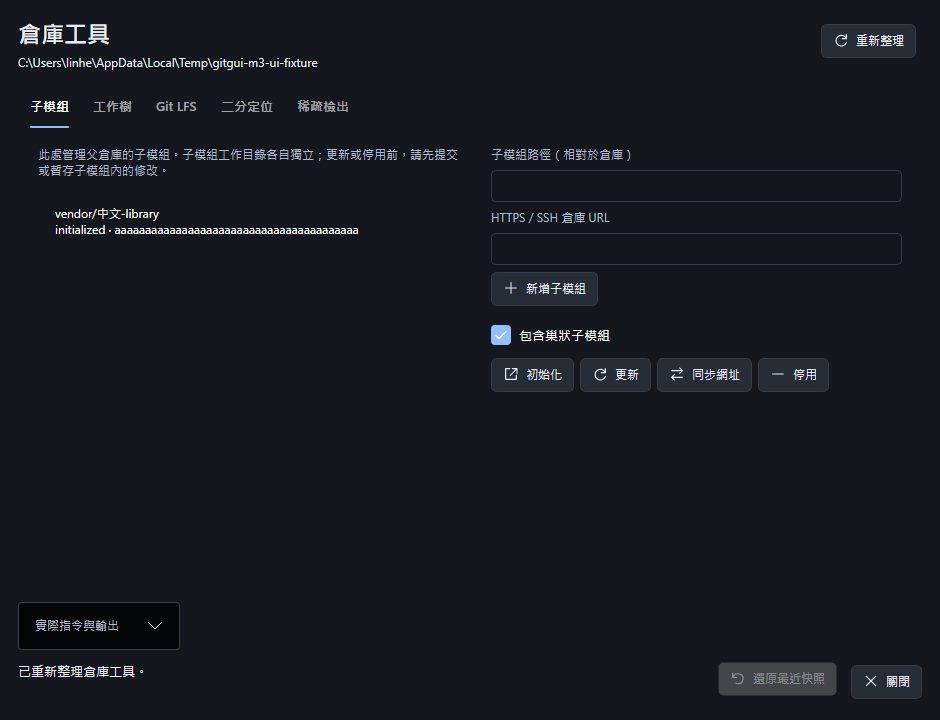
10. 工作樹（Worktrees）
在「倉庫工具」→「工作樹」，可讓同一倉庫的不同分支同時存在於不同資料夾。
- 新增：填寫全新或空白的絕對路徑、來源提交，以及新分支名稱。分支名稱留空會建立 detached 工作樹。
- 選取項目，輸入原因後可鎖定，適合放在外接磁碟上的工作樹；需要移除前先解鎖。
- 移除會要求確認，保留分支，且拒絕未提交／未追蹤／被忽略資料，不提供 force。
- 「清理過期紀錄」對應 prune，只清理 Git 判定已失效且未鎖定的紀錄。
工作樹操作沒有快照 Undo。不能從目前正在開啟的工作樹移除自己；先改開另一個工作樹。共用同一個 Git common directory 的 GUI 操作會序列化。
Windows 使用 reftable 格式時，Git 在部分 Windows 版本可能已移除工作樹資料夾，卻因檔案仍被 Git 映射而無法刪除管理紀錄。程式會明確顯示此狀態，不會自動清理。請先確認外接磁碟與其他工作樹仍可存取，再按「清理過期紀錄」並確認；這會清理所有已失效且未鎖定的紀錄，不只剛移除的項目。原分支會保留。
11. Git LFS
在「倉庫工具」→「Git LFS」查看版本與狀態。
- 先按「安裝至此倉庫」，設定本地 filter 與 pre-push hook。
- 每行輸入一個追蹤規則，例如
*.psd 或 assets/*.bin，按「追蹤」。
- 檢查並提交
.gitattributes 與實際大型檔案。
- 設定遠端後，可執行 LFS Fetch 下載物件，或 LFS Pull 下載並取出目前提交的物件。
- 「取消追蹤」只修改屬性規則，不改寫既有提交中的 LFS pointer 或歷史。
LFS 不是備份，也不自動進行歷史遷移。此工具沒有 LFS 快照 Undo；一般提交／快照仍依原有本地資料處理。遠端必須支援 LFS，登入、額度及網路錯誤會顯示在操作輸出。自訂 core.hooksPath 的倉庫，LFS 會依 Git 設定使用該 hooks 位置；既有不相容 hook 可能使安裝失敗。
12. 二分定位（Bisect）
在「倉庫工具」→「二分定位」：
- 先提交或 stash 目前變更。
- 輸入已知有問題的 bad 提交，以及較早且正常的 good 提交。good 必須是 bad 的祖先。
- 按「開始」，Git 會取出待測提交。
- 自行建置／執行程式判斷後，按「正常」「有問題」或「略過」。重複直到找到第一個有問題的提交。
- 按「重設」執行
git bisect reset，回到原先分支／提交。關閉再開程式也能接續目前的 bisect。
此功能不自動執行測試命令，復原方式為 bisect reset。可能被 checkout 覆蓋的未追蹤／被忽略檔案會先被擋下；請先移走或妥善保存，再開始。
13. 稀疏檢出（Sparse-checkout）
在「倉庫工具」→「稀疏檢出」：
- 先保存目前變更。
- 勾選 cone 模式時，每行填入一個相對目錄，例如
src、docs；Git 也會保留必要的根層／父層檔案。
- 不勾選 cone 時，每行使用 Git sparse-checkout 的 pattern 語法。
- 按「套用」後，未包含的已追蹤檔案會從工作目錄隱藏，仍保存在 Git 歷史內。
- 按「停用」取回完整工作目錄，或還原操作前快照。
快照還原保存選定工作樹的 sparse 設定、pattern、index skip flags 與實際存在的檔案。Git 啟用的 extensions.worktreeConfig 儲存格式升級會保留，以免破壞其他工作樹。資料夾／忽略檔案衝突會先拒絕處理。
14. 簽章提交與標籤
先依自己的環境設定 GPG 或 SSH 簽章；程式不產生、不儲存你的私鑰。提交時勾選「簽署提交」，建立標籤時勾選簽章選項並填寫訊息，即交給 Git 執行 commit -S 或 tag -s。
一般本機版本管理不需要簽章。v0.7.1 未勾選「簽署提交」時，仍會沿用 Git 的 commit.gpgsign 設定。若出現 gpg: signing failed: No secret key，請依第 22.4 節處理。
SSH 設定範例（請換成已有的私鑰實際路徑）：
git config --local gpg.format ssh
git config --local user.signingkey "C:/Users/你的帳號/.ssh/id_ed25519"
簽章需要可用的 signer／agent；硬體金鑰、密碼提示與第三方 GPG 設定依你的環境而定。簽章成功不等同遠端平台已將該金鑰認定為你的帳號，請另外完成平台金鑰登記。
15. 快捷鍵、命令選單與無障礙操作
主畫面右下方按「快捷鍵」，可依主視窗、進階與倉庫工具的作用範圍搜尋命令並設定按鍵。
- 找到命令，在右側欄位輸入組合，例如
Ctrl+Shift+K，按該列「儲存」。
- 清空組合後儲存，即解除該命令的快捷鍵；按鈕與命令選單仍可使用。
- 按「還原預設」會重設所有自訂快捷鍵。
- 同一作用範圍不能重複使用相同組合。文字輸入、複製貼上、復原，以及 Tab／方向鍵等保留按鍵不能覆寫；儲存失敗時會顯示原因。
常用預設值：
| 按鍵 |
功能 |
F5 |
重新整理目前視窗。 |
Ctrl+Enter |
在主視窗提交已暫存內容，仍會檢查訊息、衝突與操作狀態。 |
Ctrl+Shift+P |
開啟目前主視窗／進階／倉庫工具的命令選單，輸入名稱搜尋，再按 Enter 執行。 |
F6／Shift+F6 |
在主畫面的主要區域間向前／向後切換焦點。 |
Tab／Shift+Tab |
在可操作控制項間移動。 |
Esc |
關閉可關閉的對話框或命令選單。 |
尚未綁定按鍵的命令也能從命令選單找到。正在執行操作、沒有選取項目或有未解決衝突時，快捷鍵與按鈕使用相同的停用規則。
介面提供控制項名稱、焦點導覽與提交圖的 automation peer，供輔助工具識別目前提交、清單與按鈕。這些支援包含程式層的無障礙與鍵盤測試；各作業系統原生螢幕閱讀器的實際朗讀與操作結果，仍需另外驗證，尚未宣稱 Windows Narrator 人工驗收通過。
16. 中文訊息、路徑與換行設定
右側詳情會顯示選取提交的訊息編碼，以及目前倉庫的 core.autocrlf、core.safecrlf、core.eol 設定與換行轉換提醒。
- 有
encoding 標頭的 commit，依標頭解碼；沒有標頭時先讀 UTF-8，若位元組不合法，再嘗試 Big5，並標示偵測結果。
- 未知或無法解碼的訊息會標示狀態。互動 rebase 若需要讀取這類訊息，會要求先用能保留原始位元組的 Git 工具處理，避免把錯誤解碼結果寫回歷史。
- 新提交、amend，以及 rebase 的 reword／自訂 squash 訊息，使用倉庫明確設定的
i18n.commitEncoding；未設定時使用 UTF-8。程式保留原設定。
- 若編碼不受支援，或訊息含該編碼無法表示的字元，例如 Big5 設定下的 emoji，會在建立快照或寫入 Git 前拒絕。請修改訊息，或自行確認後變更倉庫的編碼設定，再重試。rebase 暫停期間若改變此設定，須恢復原值才能沿用已保存的訊息檔繼續。
例如要讓之後的新訊息使用 UTF-8，可在確認團隊需求後執行：
git config --local i18n.commitEncoding UTF-8
這只調整之後的訊息編碼，不會轉換或修復既有 commit。附註標籤訊息使用 UTF-8。
中文、空格、換行與 emoji 檔名以原始路徑處理。無法以 UTF-8 表示的檔名會用 \xFF 等轉義顯示，並保留原始位元組與 rename 來源；為避免誤改同名的有效路徑，相關編輯／暫存操作會被停用或拒絕。請使用支援原始位元組路徑的工具重新命名後再操作。倉庫有此類路徑時，部分暫存也會保守拒絕；其他受支援檔案仍可整檔暫存。非 UTF-8 的文字差異與二進位／符號連結衝突，使用整檔處理，不經文字編輯器另存轉碼。
core.autocrlf 未設定時顯示 unset，Git 預設視為 false。true、input、false 的行尾轉換行為不同，也可能受 .gitattributes 影響。請先查看提醒與差異，再決定是否修改設定；GITGUI 不會自動改成另一種換行政策。Windows 的 Git 執行程序會啟用 core.longpaths。
17. 狀態刷新與提交分頁
外部編輯檔案、切回視窗或按重新整理時，程式可局部更新工作區狀態與目前差異，避免每次都重建整份提交清單。使用者仍可透過重新整理取得新的 refs 與提交內容。
提交圖預設先載入 500 筆。按「載入更多」繼續取得下一頁；搜尋或改變篩選條件會從新的查詢開始。若讀取期間歷史已改變，會重新載入，以免把不同版本的分頁混在一起。
先在搜尋欄輸入文字，按「套用篩選」查詢。作者、路徑、起日與迄日收在「進階篩選」：按標題展開後輸入，再按相同的套用按鈕。收合或切換頁籤會保留已輸入的條件，收合不等於清除；如要取消條件，請展開並清空對應欄位後重新套用。鍵盤可將焦點移到「進階篩選」，按空白鍵展開，再按 Tab 進入欄位。欄位在第一次展開時才建立，讓一般提交圖畫面更快顯示。
提交圖資料備妥後會先顯示，工作區狀態與安全檢查可繼續在背景完成。這段期間仍不能執行寫入操作；若載入失敗，請重新開啟倉庫。歷史未改變時，重新整理會保留已載入的分頁與選取項目。
刷新同一個檔案的差異時，現有文件會保留供閱讀，直到新結果備妥；查詢期間部分暫存仍停用。內容相同時會保留捲動位置與已勾選的差異行。一般 UTF-8／CRLF 文字及圖片預覽使用原生讀取；特殊 filter、編碼或不支援的倉庫格式會使用你選定的 Git，維持原有語意。
大型差異先顯示檔案資訊與提示，需要時再按「仍要載入」。切換檔案後，以目前選取項目的載入結果為準；差異載入中不能送出尚未確認的部分暫存。
v0.7.0 已在十萬筆提交／五萬個檔案的固定測試環境通過原始效能門檻：首次啟動 1,319.86ms、首屏最大 812.25ms、status 最大 236.34ms、Diff 最大 131.24ms、常駐記憶體最大約 221.23MB；五組持續捲動均通過空檔檢查，量測範圍內單次 UI 工作最大 13.9479ms。完整條件、逐筆紀錄與驗證邊界見 效能報告。
18. 錯誤建議與本機日誌
操作失敗時，主視窗、進階與倉庫工具會顯示白話原因及建議動作。例如 lease 過期先 Fetch、非快轉推送先檢查同步狀態、衝突轉到解決流程、登入失敗開啟憑證說明、鎖定問題開啟鎖定說明。請先讀取原始原因，再執行建議；建議按鈕不會略過信任、確認或目前操作狀態的檢查。
提交被辨識為 hook 拒絕時，可按「略過 hooks 重試」；必須另行確認，只重試同一份尚未改變的提交訊息、倉庫與選項，不會把略過設定保存為預設。修改草稿或切換倉庫後，請重新送出提交。其他 hook 操作仍先顯示輸出。
展開「操作面板」可查看實際指令與 Git 輸出，並複製內容。憑證欄位會遮罩；若要將輸出貼給他人，仍請自行檢查倉庫路徑及檔案內容是否適合分享。
0.7.0候選版會在第一次展開時建立輸出區；收合時仍保留指令紀錄，重新展開會顯示最新內容。顯示紀錄設有長度上限，超過上限保留最新部分。單欄Diff切換為左右比對時才建立左右編輯器，後續切換會保留已建立的編輯器。
Windows 的應用程式資料位置：
%LOCALAPPDATA%\GitGui\ui.json 語系與自訂快捷鍵
%LOCALAPPDATA%\GitGui\appearance.json 外觀
%LOCALAPPDATA%\GitGui\gitgui.db 最近倉庫、信任與快照清單等索引
%LOCALAPPDATA%\GitGui\gitgui-YYYYMMDD.log 本機診斷日誌
可把 %LOCALAPPDATA%\GitGui 貼到檔案總管網址列開啟。macOS／Linux 使用作業系統提供的本機應用程式資料目錄下的 GitGui 資料夾。
日誌按日切檔並保留 14 天，也會記錄取消或啟動失敗的指令嘗試。持久化內容包含遮罩後的參數、工作目錄、耗時、結束碼與 stderr 分類，不保存 stdout、diff／blob、提交訊息、任意 hook stderr 或 AskPass 回答。操作面板與持久化日誌的內容範圍不同。日誌無法寫入時，不應把已成功的 Git 操作改判為失敗。
目前沒有自動上傳日誌或預設啟用的遙測；日誌留在本機。
19. 常見問題與驗證範圍
| 現象 |
處理方式 |
| 找不到 Git |
在 Git 設定選擇 Portable Git 資料夾或 git.exe；最低 Git 2.40。 |
index.lock／ref lock 存在 |
確認其他 Git 行程是否仍在運作；不要直接刪除活躍行程的鎖。 |
| 按鈕停用 |
等待操作完成、解決目前衝突，或先關閉占用佇列的內建終端機。 |
| Push 遭拒絕 |
先 Fetch 檢查差異；lease 過期時不要繞過保護直接強推。 |
| Hook／簽章失敗 |
展開指令輸出，依 Git 回報修正工具或倉庫設定。 |
| LFS 指令不可用 |
確認選的是完整 Portable Git；使用自己的 Git 時需另備 Git LFS。 |
| 還原被資料夾／子倉庫擋下 |
先另行備份該資料，保留原倉庫並檢查實際路徑；不要為了還原而直接刪除子倉庫。 |
| Big5 提交不能包含 emoji |
修改訊息，或先確認需求再明確變更 i18n.commitEncoding；程式不會靜默替換字元。 |
| 快捷鍵無法儲存 |
檢查是否與同一作用範圍的命令重複，或使用了保留按鍵。也可清空解除綁定、還原預設。 |
Windows 發布包為 x64。ARM 原生套件尚未正式發布；跨平台 CI 與實際 Windows ZIP／桌面測試的結果以同版 Release 的 verification.json 及相容性文件為準。M4 已加入鍵盤自訂、無障礙介面與分頁刷新支援；原生螢幕閱讀器人工驗證、大型效能目標及完整 VT／PTY 的完成狀態須分別確認。
主程式採 MIT 授權，免安裝資料夾內的 LICENSE 保留著作權與免責聲明；Portable Git 與其他相依元件仍依各自授權，見 THIRD-PARTY.txt 與 licenses/。
20. 完整範例：第一次將新專案備份到 GitHub
這個範例把本機的 hello-backup 專案建立為 Git 倉庫，再上傳到自己的 GitHub。這裡的備份是「程式碼與提交歷史」：只有已提交並 Push 的內容會送到遠端，未提交、被忽略的檔案及 GITGUI 本機快照索引不會因此一起備份。
**看圖操作方式：**每張圖的黃色編號對應緊接圖下的說明；「點擊／輸入」才是操作，「核對／保持未勾選」只需檢查。點圖片可開啟原尺寸。截圖拍攝於 2026-10-24，使用實際 Windows 介面與獨立示範專案，圖中的 C:\GitGui-Manual-…\hello-backup 請換成自己的資料夾。
GitHub 圖片採用現有的 linhercherng/GITGUI 倉庫作位置參考，沒有另外建立 GitHub 示範專案。請使用自己新建的空白倉庫，勿照抄圖片中的 GITGUI URL、檔案或 SHA。本機示範的兩次提交與 Push 已以隔離的本機遠端驗證，沒有把 hello-backup 上傳至 GitHub；登入畫面因帳號與憑證工具而異，請由本人完成。
20.1 準備範例與空白 GitHub 倉庫
| 項目 |
本範例使用的值 |
| 本機專案資料夾 |
C:\Projects\hello-backup |
| GitHub 倉庫名稱 |
hello-backup |
| 分支 |
main |
| 遠端名稱 |
origin |
| 遠端 HTTPS URL |
https://github.com/YOUR-ACCOUNT/hello-backup.git |
請把 YOUR-ACCOUNT 換成自己的 GitHub 帳號；資料夾也可以換成自己的實際路徑。本章是操作範例，不會自動替你建立或上傳這個倉庫。
- 登入 GitHub，建立新的 repository，名稱填
hello-backup，選擇所需的 Public 或 Private；個人備份可選 Private。
- 這次先建立空白倉庫，不要加入 README、
.gitignore 或 License，這些檔案稍後從本機提交，避免產生兩份不同的起始歷史。
- 建立後複製 HTTPS 倉庫 URL，確認擁有者與倉庫名稱正確。
- 開啟 GITGUI，到「Git 設定」確認選用的 Git 可正常驗證；免安裝版可使用包內的
PortableGit\cmd\git.exe。
完成時應有一個尚無提交的 GitHub 倉庫，以及它的 HTTPS URL。GITGUI 的「初始化倉庫」只建立本機倉庫，不會建立 GitHub 倉庫。
**圖 20-A：複製自己的 HTTPS URL（現有 GITGUI 倉庫位置參考）。**新建空白倉庫的畫面可能顯示「Quick setup」，直接複製其中的 HTTPS URL 即可；下圖適用已有檔案的倉庫。
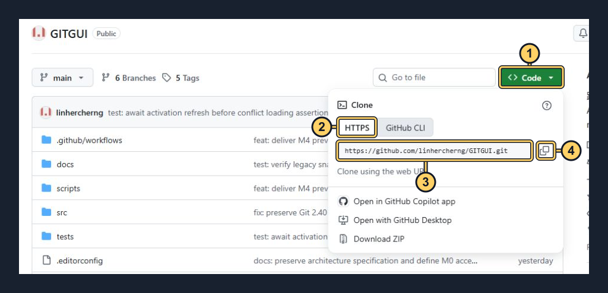
| 圖中編號 |
要做的事 |
| 1 |
點擊綠色 Code。 |
| 2 |
選擇 HTTPS。 |
| 3 |
核對 URL 是自己的帳號／hello-backup.git，不要複製本參考圖中的 GITGUI URL。 |
| 4 |
點擊複製圖示，稍後貼到「遠端管理」。 |
圖 20-B：GITGUI 起始操作入口。
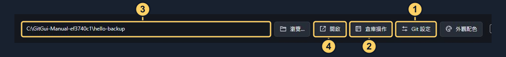
| 圖中編號 |
要做的事 |
| 1 |
先點擊 Git 設定，確認可使用的 Git；免安裝版的路徑說明見第 1 章。 |
| 2 |
新的空資料夾：點擊 倉庫操作，接著看圖 20-C。 |
| 3 |
已有 Git 倉庫：輸入自己的 倉庫路徑。 |
| 4 |
已有 Git 倉庫：點擊 開啟；不必再次初始化。 |
20.2 建立本機 Git 倉庫
依資料夾目前的情況，選擇下面一種方法即可。
A. 專案資料夾尚未建立，或目前是空資料夾
- 在 GITGUI 按「倉庫操作」。
- 在「目的資料夾」填入
C:\Projects\hello-backup；初始化本機倉庫時，URL 欄位可留空。
- 按「初始化倉庫」，等待完成；若尚未顯示該倉庫，將主畫面的「倉庫路徑」設為此路徑，再按「開啟」。
- 用自己的編輯器或檔案總管，把專案檔案建立或複製到這個資料夾。不要把另一個倉庫的
.git 資料夾一起複製進來。
圖 20-C：初始化新的空資料夾。
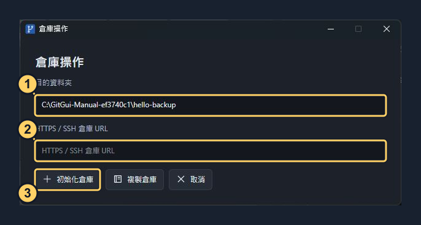
| 圖中編號 |
要做的事 |
| 1 |
輸入新的／空的專案資料夾，例如 C:\Projects\hello-backup。 |
| 2 |
URL 留空；這裡是本機初始化。 |
| 3 |
點擊 初始化倉庫，完成後才把專案檔案放入資料夾。已有檔案請改用下面的方法 B。 |
B. 專案資料夾已經有檔案，但還不是 Git 倉庫
v0.7.1可以直接在 GUI 操作，不需要開啟 PowerShell：
- 按主畫面的「倉庫操作」。
- 在「目的資料夾」旁按「瀏覽…」，選擇原有的專案資料夾，例如
C:\Projects\hello-backup；也可直接填入路徑。
- 第一次使用 Git 時，填寫「提交者姓名」與「提交者電子郵件」。兩欄只儲存在這個倉庫，不影響其他專案；若已有可用的 Git 身分設定，可兩欄都留空。
- URL 留空，按「初始化倉庫」。程式只建立
.git，不改寫原檔案、.gitignore，也不會上傳或自動暫存。
- 完成後主視窗會自動開啟這個倉庫，顯示原有檔案的變更。先依第 20.3 節檢查
.gitignore，再於第 20.4 節按「全部暫存」、輸入訊息並按「提交」。
初始化不會建立遠端。完成上述步驟就有第一筆本機 Git 紀錄，日後有需要再設定遠端與 Push。若資料夾本身或父資料夾已有 Git 倉庫，程式會拒絕重新初始化，請直接開啟原倉庫。Clone 仍須使用全新或空白目錄。
C. 專案已經是 Git 倉庫
直接在 GITGUI 開啟原有資料夾，沿用既有歷史，不需要重新初始化。若現有分支叫 master 或其他名稱，後面步驟中的 main 請換成實際分支名稱。
完成時應看到正確的倉庫路徑與目前分支；新初始化的倉庫是 main，尚未有提交是正常的。
20.3 準備檔案、忽略規則與作者資料
例如在專案資料夾建立 README.md，內容如下；已有 README 的專案可保留自己的內容：
# hello-backup
這是我的第一個備份專案。
在同一層建立名為 .gitignore 的檔案，依專案調整。以下是常見開發專案的起點，不要把需要保存的檔案誤列為忽略：
.env
.env.*
!.env.example
node_modules/
bin/
obj/
.vs/
*.log
確認檔名不是 .gitignore.txt，且帳密、Token、私鑰或真實環境設定沒有出現在準備上傳的清單中。.gitignore 本身需要提交；它不會自動取消已追蹤檔案的追蹤。
v0.7.1的新倉庫可在第 20.2 節的初始化視窗填寫姓名與電子郵件，之後直接使用 GUI 暫存與提交，無須開啟終端機。以下指令僅供舊倉庫尚未設定作者時使用；電子郵件可使用 GitHub 提供的 noreply 地址：
git config --local user.name "你的姓名"
git config --local user.email "you@example.com"
若有使用終端機，關閉終端機視窗後再繼續 GUI 操作。終端機開啟時會占用寫入佇列；若出現「信任此倉庫」，確認是自己的專案並閱讀設定後再同意。
作者姓名／電子郵件用於提交紀錄，與 GitHub 登入是兩件事。
圖 20-D：作者設定與後續遠端管理的入口。
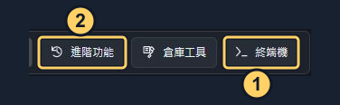
| 圖中編號 |
要做的事 |
| 1 |
需要設定作者時，點擊 終端機，輸入上方兩行 git config --local 指令；完成後關閉終端機。 |
| 2 |
暫時先不用點；第一次提交完成後，第 20.5 節會從 進階功能 設定遠端。 |
20.4 暫存並建立第一次提交
- 按「重新整理」，在「工作區」的「未暫存」清單確認專案檔案與
.gitignore 都已列出。
- 選取檔案，檢查右側差異；需要忽略的內容不應列入提交。
- 檔案都確認過後按「全部暫存」；若只想備份其中幾個檔案，改為選取後按「暫存選取」。
- 切換到「已暫存」，再檢查一次這次將保存的內容。
- 在提交訊息輸入
初始化專案：加入專案檔案與說明，保持「修改上一筆提交」未勾選，按「提交」。
- 等待成功，再到「提交歷史」確認出現這筆訊息。若仍有未暫存檔案，代表那些內容尚未包含在這次提交中。
圖 20-E：先看差異，再全部暫存。
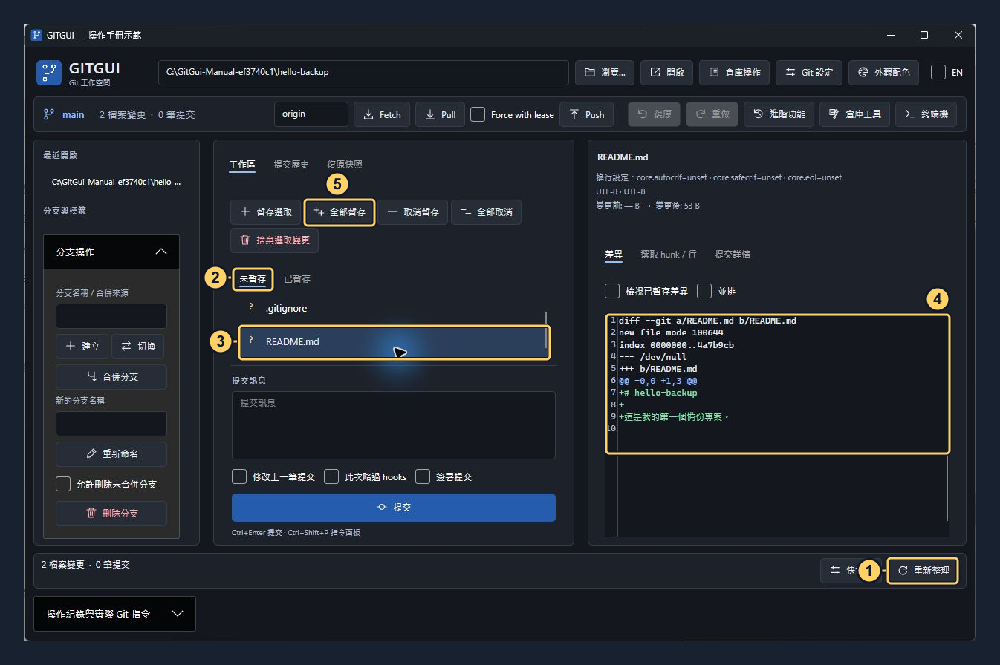
| 圖中編號 |
要做的事 |
| 1 |
點擊 重新整理。 |
| 2 |
選擇 未暫存。 |
| 3 |
點選 README.md；其他檔案（含 .gitignore）也要逐一檢查。 |
| 4 |
核對右側差異，綠色 + 是新增內容。 |
| 5 |
全部檢查完才點擊 全部暫存。只保存部分檔案時使用旁邊的「暫存選取」。 |
圖 20-F：核對暫存內容並提交。
| 圖中編號 |
要做的事 |
| 1 |
點擊 已暫存，確認要保存的檔案都有列出。 |
| 2 |
核對已暫存差異；切換頁籤後右側會勾選「檢視已暫存差異」。 |
| 3 |
輸入 初始化專案：加入專案檔案與說明。 |
| 4 |
保持 修改上一筆提交 未勾選。 |
| 5 |
點擊 提交，等待操作完成。 |
圖 20-G：確認第一次本機提交。
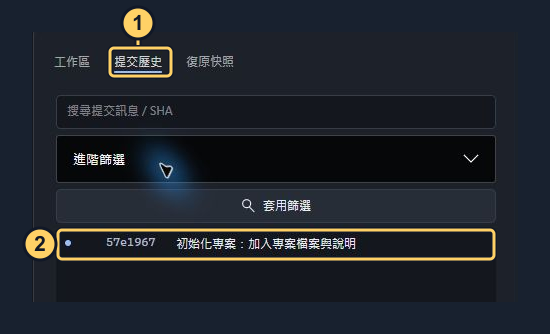
圖中 1 點擊「提交歷史」；2 核對第一次提交訊息與 SHA。你的 SHA 會不同，這是正常的。
到這裡只完成本機保存，GitHub 還沒有收到檔案。 接下來還要設定遠端並 Push。
20.5 設定 GitHub 遠端
- 按主畫面「進階功能」（圖 20-D 的 2），切換到「遠端管理」。
- 「遠端名稱」填
origin，「HTTPS / SSH 倉庫 URL」填入第 20.1 節複製的 HTTPS URL。
- 保持「設定 Push URL（取消則為 Fetch URL）」未勾選，按「新增遠端」。
- 確認清單出現
origin，選取後核對顯示的 URL，然後關閉進階視窗。
- 如果
origin 原本就存在，先核對其 URL；不要重複新增。確實需要改網址時，選取該遠端、填入正確 URL，再按「儲存 URL」，並核對是否另有獨立的 Push URL。
**圖 20-H：新增自己的 GitHub 遠端。**圖中 URL 是填寫範例，YOUR-ACCOUNT 必須換成自己的帳號；可直接貼上圖 20-A 複製的網址。
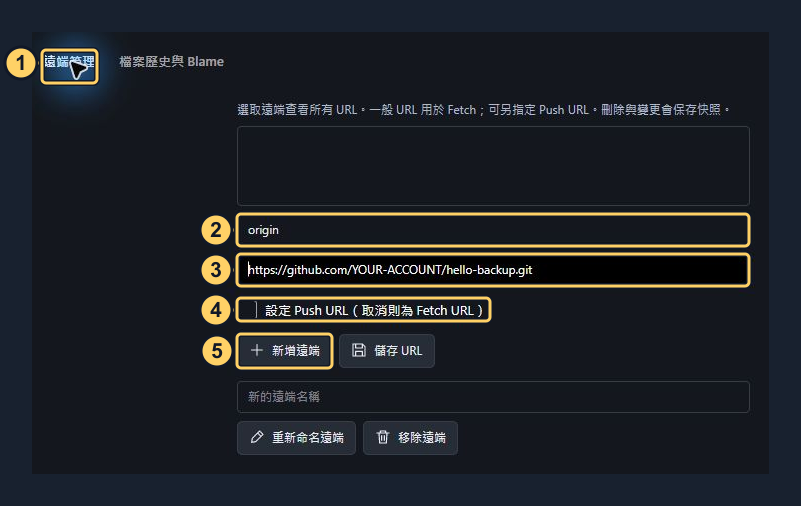
| 圖中編號 |
要做的事 |
| 1 |
點擊 遠端管理。 |
| 2 |
輸入 origin。 |
| 3 |
貼上自己的完整 HTTPS URL。 |
| 4 |
保持 設定 Push URL 未勾選。 |
| 5 |
點擊 新增遠端，等待成功。接著選取左側出現的 origin 核對 URL，再關閉視窗。 |
20.6 第一次 Push 並確認備份成功
- 回主畫面，確認分支是
main，上方「遠端」欄位填 origin，保持 Force with lease 未勾選。
- 按「Push」。若出現信任或分支名稱確認，閱讀內容並核對此次目標後再確認。
- 若既有憑證工具開啟瀏覽器登入，依提示登入有該倉庫寫入權限的 GitHub 帳號。若要求 GitHub Username／Password，Username 填帳號，Password 使用具該倉庫寫入權限的 Personal Access Token，不是 GitHub 登入密碼。不要把 Token 放進 URL 或專案檔案。
- 等待成功；需要確認細節時，可展開「操作紀錄與實際 Git 指令」。第一次成功推送後會建立目前分支的 upstream，供後續同步使用。
- 回 GitHub 重新整理倉庫頁面，切到
main，確認看到 README.md、.gitignore、其他預期檔案及剛才的提交訊息。可以再比對 GitHub 的提交 SHA 與 GITGUI 顯示的同一筆提交。
**圖 20-I：第一次一般 Push。**請先完成圖 20-H 的遠端設定。
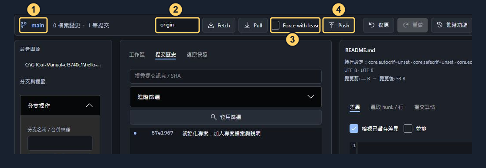
圖中 1 核對 main；2 核對 origin；3 保持 Force with lease 未勾選；4 點擊「Push」。若有登入或目標確認，請本人核對後完成。此圖示範按鈕位置，不代表 hello-backup 已上傳到 GitHub。
圖 20-J：到自己的 GitHub 倉庫驗證（現有 GITGUI 倉庫位置參考）。
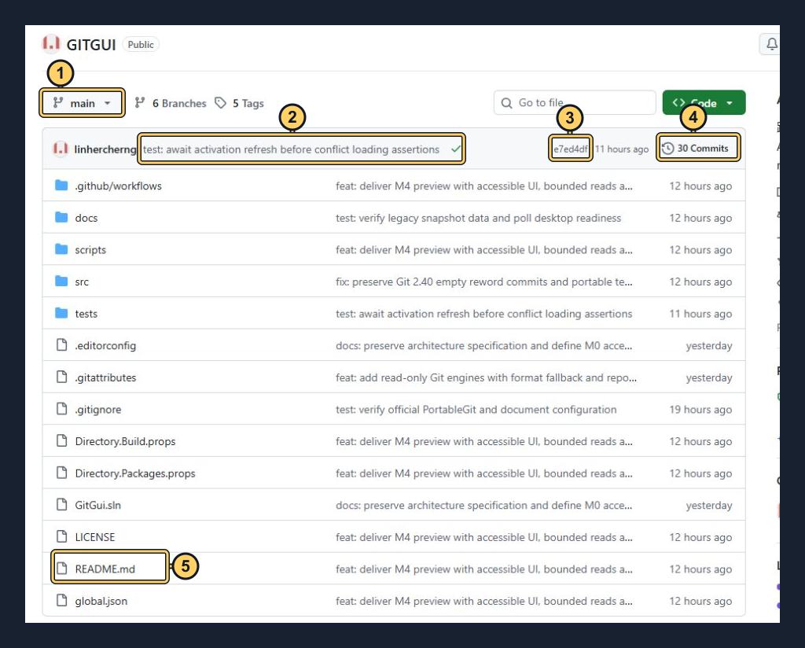
| 圖中編號 |
要做的事 |
| 1 |
重新整理網頁後，核對分支是自己剛 Push 的 main。 |
| 2 |
核對最新提交訊息，應是自己的「初始化專案：加入專案檔案與說明」。 |
| 3 |
點擊短 SHA 可開啟提交詳情；它應與 GITGUI 的同一筆提交一致。 |
| 4 |
若要找更早的提交，點擊 Commits。數字會依自己的倉庫而不同。 |
| 5 |
點擊 README.md 核對內容；也要確認 .gitignore 與其他預期檔案存在。 |
確認檔案與提交都已在 GitHub 出現，才算完成這次遠端備份。未追蹤、被忽略或尚未提交的內容不會因為按 Push 而自動上傳。大型素材若需要 Git LFS，請先依第 11 章設定，再檢查對應的 LFS 上傳結果。
21. 完整範例：專案修改後再次更新上傳
沿用第 20 章已備份成功的 C:\Projects\hello-backup、main 與 origin。之後每次更新都使用同一個倉庫，不必重新建立 GitHub 倉庫或初始化。
21.1 修改並保存專案
- 在 GITGUI 從「最近開啟」選擇專案，或輸入原路徑再按「開啟」；確認目前分支與遠端正確。
- 如果還沒開始修改，先按「Fetch」檢查遠端是否有新提交；本機乾淨且遠端有更新時，先 Pull 並確認成功，再開始編輯。
- 用原本的編輯器修改專案。例如在
README.md 最後增加一行 第二版：加入聯絡資訊。，並儲存檔案。若你已經修改完成，直接進入下一節，不必重做這個示範修改。
**圖 21-A：開啟原專案，認明同步按鈕。**本圖已存入示範修改，因此顯示 1 個變更；尚未修改時應是乾淨狀態。
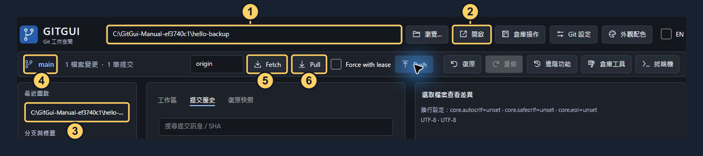
| 圖中編號 |
要做的事 |
| 1、2 |
輸入原專案路徑，點擊 開啟。 |
| 3 |
或從 最近開啟 選擇原專案，兩種方式擇一。 |
| 4 |
核對目前分支。 |
| 5 |
開工前點擊 Fetch 檢查遠端狀態。 |
| 6 |
本機乾淨、遠端有新提交時才 Pull；已修改的檔案先妥善保存，依第 21.3 節處理。 |
21.2 檢查、暫存與提交本次修改
- 回到 GITGUI 按「重新整理」，確認「未暫存」出現
README.md；新增或刪除檔案也會列為變更。
- 選取它，在右側檢查差異，確認新增的文字正確，沒有混入本次不想保存的修改。
- 按「暫存選取」；多個檔案可逐一暫存，全部檢查過才使用「全部暫存」。
- 切到「已暫存」核對；如果暫存後又編輯檔案，後續修改仍要再暫存，才會包含在這筆提交中。
- 提交訊息輸入
更新專案說明：加入聯絡資訊，保持「修改上一筆提交」未勾選，按「提交」。
- 到「提交歷史」確認多出這筆提交。提交成功但尚未 Push 時，GitHub 仍會顯示舊版本。
圖 21-B：找到這次修改，再暫存選取。
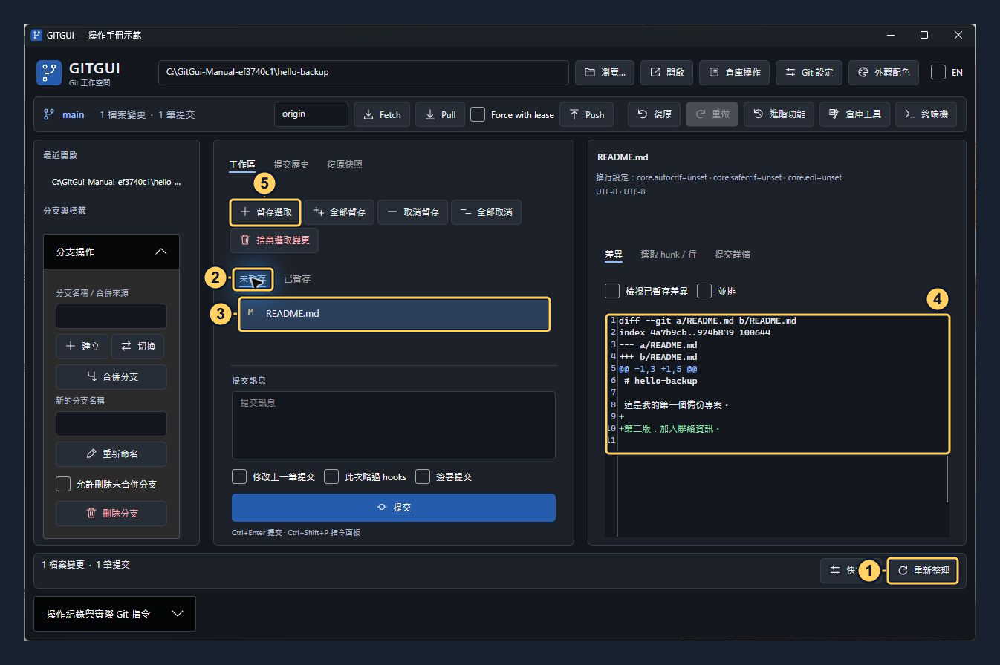
| 圖中編號 |
要做的事 |
| 1、2 |
點擊 重新整理，切換 未暫存。 |
| 3 |
選取 README.md。 |
| 4 |
核對綠色新增行是 第二版：加入聯絡資訊。。 |
| 5 |
點擊 暫存選取；不要誤按「捨棄選取變更」。 |
圖 21-C：建立新的提交。
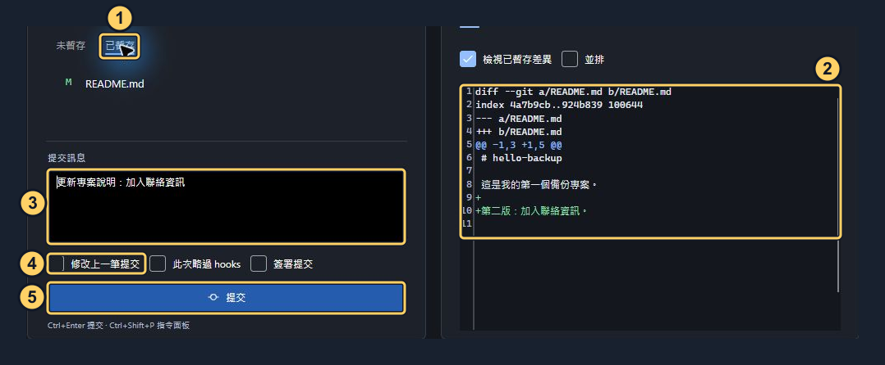
| 圖中編號 |
要做的事 |
| 1、2 |
切換 已暫存，核對本次修改確實包含在差異中。 |
| 3 |
輸入 更新專案說明：加入聯絡資訊。 |
| 4 |
保持 修改上一筆提交 未勾選。 |
| 5 |
點擊 提交，等待完成，再到提交歷史核對。 |
21.3 檢查遠端更新，再 Push
- 確認沒有遺漏的本機修改；若需要全部備份，先把剩下的預期修改也提交。
- 遠端欄位使用
origin，按「Fetch」，檢查 origin/main 是否有別台電腦、其他人或 GitHub 網頁編輯所新增的提交。
- 只有本機新增提交、遠端沒有新提交時，可直接按「Push」，保持
Force with lease 未勾選。
- 如果遠端也有新增提交，先在本機修改已提交或妥善保存的狀態下按「Pull」。合併成功後再 Push；若出現衝突，依第 5 章解決並完成合併提交，再上傳。不要用強制推送覆蓋尚未整合的遠端內容。
- 如果 Push 時剛好又有別人更新而被拒絕，重新 Fetch、檢查並整合遠端更新後再試。
- 等待成功後，開啟 GitHub 的
hello-backup 倉庫，切到 main，確認最新提交訊息是 更新專案說明：加入聯絡資訊，且 README 已顯示新增文字。若剛才產生合併提交，最新一筆可能是合併訊息，請在歷史中確認本次修改也已包含。
圖 21-D：提交後先檢查遠端，再決定是否 Pull，最後 Push。
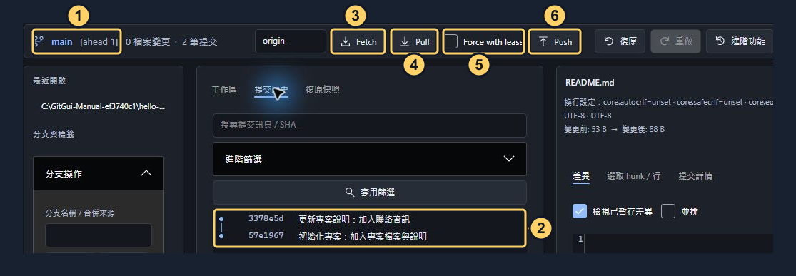
| 圖中編號 |
要做的事 |
| 1 |
核對目前分支；ahead 1 表示本機比已取得的上游多 1 筆提交，仍須 Fetch 確認最新遠端狀態。 |
| 2 |
核對最新一筆是本次修改，舊的第一次提交仍在。 |
| 3 |
點擊 Fetch，等待完成並檢查遠端。 |
| 4 |
遠端也有新提交才 Pull，依文字步驟完成整合／衝突處理。不要把 Fetch → Pull → Push 當成不需判斷的連續點擊。 |
| 5 |
保持 Force with lease 未勾選。 |
| 6 |
確認可正常推進遠端後，點擊 Push。 |
圖 21-E：取得本機提交 SHA，與 GitHub 比對。
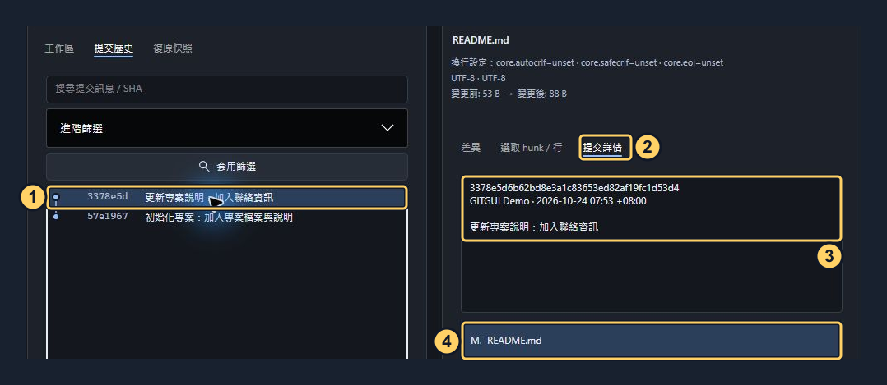
圖中 1 點選新提交；2 右側顯示「提交詳情」；3 核對完整 SHA、作者與訊息；4 確認這筆包含 README.md。本圖是本機示範提交，SHA 不會與下面的 GITGUI 參考圖相同；實際操作時應比對自己倉庫的同一筆提交。
**圖 21-F：核對 GitHub 上的同一筆提交（現有 GITGUI 倉庫位置參考）。**先依圖 20-J 的 3 點擊自己倉庫的最新 SHA。
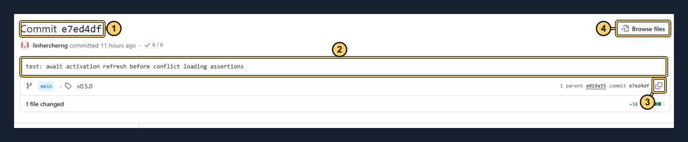
| 圖中編號 |
要做的事 |
| 1 |
核對自己的短 SHA，應與 GITGUI 所選提交的開頭一致。 |
| 2 |
核對提交訊息是本次更新。 |
| 3 |
點擊複製圖示可取得完整 SHA，與圖 21-E 的 3 比對。 |
| 4 |
點擊 Browse files，再開啟 README.md，確認這筆提交已包含新增文字。也可回倉庫首頁核對 main 的 README。 |
日常順序可記為：儲存檔案 → 檢查差異 → 暫存 → 提交 → Fetch／必要時 Pull → Push → GitHub 核對。
21.4 更新上傳時的常見狀況
| 現象 |
應該怎麼做 |
| 檔案改了，Push 卻顯示已是最新 |
確認編輯器已儲存，以及變更是否已暫存並提交。Push 只傳提交，不直接傳工作目錄檔案。 |
| 新檔案沒有出現在清單 |
檢查是否存進正確專案資料夾，以及是否被 .gitignore 忽略。 |
顯示 origin 已存在 |
到「進階」→「遠端管理」核對／修改既有設定，不必再次新增。 |
| 第一次上傳時發現 GitHub 已有 README，並出現兩邊歷史無關的錯誤 |
保留原專案，將 GitHub 倉庫複製到另一個新路徑，再把要保存的專案檔案複製進去（不要覆蓋 .git），檢查後暫存、提交並 Push。 |
Push 顯示 non-fast-forward 或需要先 Fetch |
本機先保存修改，Fetch 並檢查遠端歷史；必要時 Pull、處理衝突後再 Push。 |
| GitHub 提示沒有權限或驗證失敗 |
核對 URL、登入帳號與該倉庫的寫入權限；HTTPS 使用憑證工具或 Token，不使用 GitHub 登入密碼。 |
| 已成功上傳，但 GitHub 看起來沒變 |
核對倉庫擁有者、遠端 URL、網頁目前選取的分支，以及最新提交 SHA。 |
| 想取回另一台電腦 |
在新的空白目的路徑用「倉庫操作」→「複製倉庫」，填入同一 HTTPS URL；之後開工先 Fetch／Pull。 |
GitHub 的空白倉庫與 HTTPS 驗證說明可參閱官方文件：將本機程式碼加入 GitHub、遠端倉庫與 HTTPS 驗證。本範例的 GITGUI 按鈕與行為依本專案介面撰寫。
22. 完整範例：只在本機保存版本與再次提交
本章使用 C:\Projects\local-notes 作為示範專案。請換成自己的資料夾；不必新增遠端，也不必按 Fetch、Pull 或 Push。暫存是挑選本次要保存的內容，提交成功才會建立可取回的歷史版本。
22.1 已有檔案的資料夾，建立第一次提交
- 按「倉庫操作」，瀏覽選取已有檔案的
C:\Projects\local-notes。
- 依第 20.2 節填寫提交者姓名、電子郵件，按「初始化倉庫」。若資料夾已是 Git 倉庫，直接開啟即可，不必再初始化。
- 回到「工作區」→「未暫存」，逐一檢查檔案；先將密碼、Token、不想追蹤的資料排除於
.gitignore。
- 按「暫存選取」，或在全部檢查後按「全部暫存」。切到「已暫存」，確認要保存的檔案。
- 提交訊息輸入
初始版本備份，保持「修改上一筆提交」未勾選。未設定簽章金鑰時，也不要勾選「簽署提交」。
- 按「提交」，等待成功，再到「提交歷史」確認出現
初始版本備份。若簽章失敗，依第 22.4 節處理後重試。
提交只會保存納入 Git 追蹤的內容；被忽略、尚未暫存的檔案不會因此自動進入版本。
22.2 修改後，建立第二次與後續提交
- 用原本的編輯器修改專案，例如在
README.md 加入 第二版：補上使用方式。，並儲存。
- 回到 GITGUI 按「重新整理」，到「未暫存」選取
README.md，確認差異。
- 按「暫存選取」，到「已暫存」核對內容。即使第一次已全部暫存，之後的新修改仍要再次暫存。 若暫存後又編輯，也要再次暫存才能包含新內容。
- 輸入新訊息
補上使用方式，保持「修改上一筆提交」未勾選，按「提交」。
- 到「提交歷史」確認有兩筆不同的提交：
初始版本備份 與 補上使用方式。之後每次都重複「儲存 → 檢查 → 暫存 → 新訊息 → 提交」。
若按「提交」後失敗，先閱讀實際指令輸出並處理原因。一般提交失敗不會清空暫存區，不需要重新初始化倉庫。
22.3 本機版本與備份的差別
歷史紀錄主要存放在專案的隱藏 .git 資料夾；請保留它。只複製工作檔案，不會帶走完整 Git 歷史。若硬碟故障或整個專案資料夾被刪除，本機提交也可能一起遺失。要另做備份時，請在 Git 操作完成後，將含 .git 的整個專案複製到另一顆磁碟或其他備份位置。
22.4 提交失敗：GPG 找不到私鑰
若看到 gpg: skipped ... No secret key 與 fatal: failed to write commit object，代表要求簽章但找不到私鑰。姓名、電子郵件只用於提交者身分，不會自動產生 GPG 私鑰。
- 先取消勾選「簽署提交」，重新按「提交」。
- 若仍出現相同錯誤，且此專案不需要簽章，按「終端機」。確認頂端顯示的是目前專案路徑，再輸入下列指令，按 Enter 或「執行」：
git config --local commit.gpgsign false
- 等待指令完成，按「關閉終端機」，釋放倉庫操作鎖，再回到工作區提交；保持「簽署提交」未勾選。
- 在「提交歷史」確認成功。
branch.oid (initial) 表示當時還沒有第一筆提交，不代表原始檔案消失。
這個設定只關閉目前倉庫的自動簽章。若需要簽章，請依第 14 章設定可用私鑰。
Windows 版內建終端機使用 cmd，且沿用「Git 設定」所選的 Git／Portable Git。因此在內建終端機可直接輸入上述 git ...，不需外開 PowerShell，也不要加上 PowerShell 專用的 & '路徑' 語法。終端機開啟期間，GUI 的寫入操作會暫停；做完請按「關閉終端機」。
23. 完整範例：單檔還原、撤銷提交與整個專案還原
Git 每次提交保存一個版本，但取回時可選擇整個專案或特定檔案。先確認自己要處理哪一種情況：
| 目的 |
適合的做法 |
對歷史的影響 |
| 放棄某個檔案尚未提交的修改 |
取消暫存後，捨棄選取變更 |
不新增提交 |
| 只取回某個檔案在舊提交的內容 |
指定來源版本與檔案路徑，檢查後再提交 |
新增一筆還原紀錄，保留舊歷史 |
| 撤銷某次提交帶來的修改 |
Revert |
新增反向提交，保留舊歷史 |
| 讓目前分支與已追蹤檔案回到某個舊提交 |
Reset Hard |
移動分支，替換暫存區與工作檔 |
| 撤回一次 GITGUI 操作前的本機狀態 |
第 6 章的復原快照 |
依快照替換本機狀態，不撤回遠端 |
先確認要保留的新修改已提交或另行備份。 Git 不會替每次編輯器儲存建立歷史；從未提交、未納入快照或備份的內容，不保證能找回。
23.1 只放棄一個檔案尚未提交的修改
情境：上次提交的 README.md 是正確版本，今天改壞了；其他檔案要保留。
- 若
README.md 已暫存，先到「已暫存」只選它，按「取消暫存」。取消暫存本身不會刪掉工作檔的修改。
- 回到「未暫存」，只選
README.md，核對右側差異。
- 按「捨棄選取變更」，閱讀確認視窗中的檔案清單後確認。
- 重新開啟檔案，確認回到目前分支最新提交的內容；其他未選取的檔案保持原狀。
GITGUI 的捨棄會從暫存區還原工作檔，所以要回到最新提交時，應先取消該檔案的暫存。對尚未追蹤的新檔案按捨棄，會刪除該新檔案；第一次提交前也沒有可取回的已提交版本。
23.2 撤銷一筆普通提交，保留完整歷史
情境：最新一筆 補上使用方式 的修改不想要了，希望留下撤銷紀錄。
- 先讓工作區與暫存區乾淨，確認目前分支正確。
- 在「提交歷史」選取要撤銷的提交，從「提交詳情」取得完整 SHA。
- 按「進階功能」→「提交操作」，將 SHA 貼到「目標版本 / Commit SHA」。
- 按「Revert」，依確認視窗繼續，完成後重新整理。
- 核對歷史新增了一筆反向提交，原提交仍存在；檢查檔案內容符合預期。
Revert 反轉的是那筆提交的變更，並不是直接把整個專案替換成該提交的內容。撤銷較早的提交可能與後續修改衝突；請依提示解決後，到「進階功能」按「繼續操作」，或「中止操作」。本範例適用普通提交；合併提交的 Revert 需要額外指定主線，v0.7.1 此按鈕未提供該選項。
23.3 只把一個檔案還原到指定舊版本
假設目前分支剛好有以下三筆提交，且工作區／暫存區乾淨：
| 提交順序 |
內容 |
| 第一次 |
建立 A.txt、B.txt、C.txt |
| 第二次 |
修改 A.txt、B.txt |
| 第三次（目前最新） |
修改 C.txt |
目標：只讓 A.txt 回到第一次提交的內容，保留 B.txt、C.txt 的現有內容。
- 先另行保存
A.txt 目前需要保留的內容。確認沒有其他待提交的修改，以免混入這次還原。
- 可到「進階功能」→「檔案歷史與 Blame」，輸入
A.txt，按「載入歷史與 Blame」查閱修改紀錄。v0.7.1 此面板提供查閱，沒有直接還原單檔到舊版本的按鈕。
- 回到主畫面按「終端機」，確認專案路徑。僅在上述恰好三筆提交的示範中，輸入：
git restore --source=HEAD~2 --worktree -- "A.txt"
HEAD~2 是目前提交往前沿第一父系兩筆；實際專案應改用從「提交詳情」取得的完整 SHA。例如指令格式如下，先將 目標提交SHA 換成自己的實際 SHA，再執行：
git restore --source=目標提交SHA --worktree -- "A.txt"
- 等待完成，按「關閉終端機」，再按「重新整理」。到「未暫存」選
A.txt，確認差異與內容；B.txt、C.txt 應沒有因此改變。
- 只暫存
A.txt，輸入 將 A.txt 還原為第一次版本，保持「修改上一筆提交」未勾選，再按「提交」。
- 現在有第四筆提交，保留前面三筆歷史；目前分支沒有被移回第一次提交。
路徑是相對專案根目錄的路徑，例如 docs/說明.txt，請保留雙引號。本指令會覆蓋該工作檔，且不自動暫存；若指定來源中沒有該已追蹤路徑，Git 可能移除它以符合來源。重新命名過的檔案應先核對來源版本中的實際路徑。終端機指令不會自動建立 GITGUI 復原快照，執行前應自行保存需要的內容。
23.4 整個專案回到舊提交（Reset Hard）
只有確定要讓整個目前分支回到舊版時才使用；只想取回單檔請用第 23.3 節。本節全程不需要遠端，也不使用終端機。
示範情境： main 已有第 1～5 版，現在要回到第 2 版。先建立 backup/before-restore 保留第 5 版，再將 main 還原到第 2 版；最後示範切回備用分支取回第 5 版。
以下圖片於 2026-10-30 以本專案實際主視窗、進階視窗及真實 Git 後端操作獨立示範倉庫拍攝；僅隔離啟動設定、示範資料與視窗尺寸／標題，沒有模擬後端。圖片只加上編號、框線與裁切。圖中的路徑、作者與 SHA 都屬於示範資料，請改用自己的專案與目標版本。
23.4.1 先保存修改，確認目前版本
將需要保留的修改先提交或另行備份，確認「未暫存」「已暫存」都沒有待保存變更。只有暫存仍不算保存成歷史版本。
圖 23-A：核對專案、main 與乾淨的工作區。
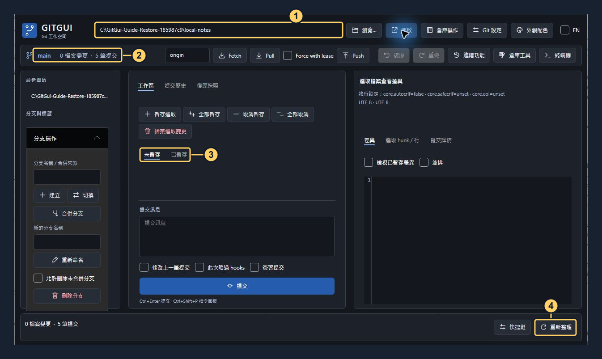
| 圖中編號 |
要做的事 |
| 1 |
核對是要還原的原專案資料夾，不要另選一個空資料夾初始化。 |
| 2 |
確認目前分支是 main，且顯示 0 檔案變更；本例目前有 5 筆提交。 |
| 3 |
分別點「未暫存」「已暫存」，確認沒有尚待保存的修改。 |
| 4 |
有外部編輯或狀態不確定時，按「重新整理」再核對。 |
23.4.2 建立備用分支，保留第 5 版
圖 23-B：只建立備用分支，暫時不要切換。
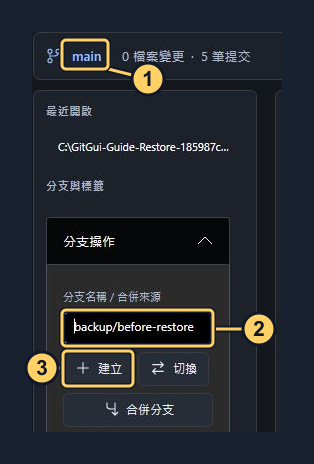
| 圖中編號 |
要做的事 |
| 1 |
確認頂端仍是 main，此時指向第 5 版。 |
| 2 |
展開左側「分支操作」，在「分支名稱 / 合併來源」輸入 backup/before-restore。若同名分支已存在，請換一個新的備用名稱。 |
| 3 |
按「建立」，等待成功。不要按旁邊的「切換」，接下來要還原的仍是 main。 |
備用分支會保留目前已提交的版本與歷史，不會保存未提交的工作檔修改。完成後才繼續下一步。
23.4.3 選取要還原的第 2 版，取得 SHA
圖 23-C：在歷史中選擇目標版本，再開啟進階功能。
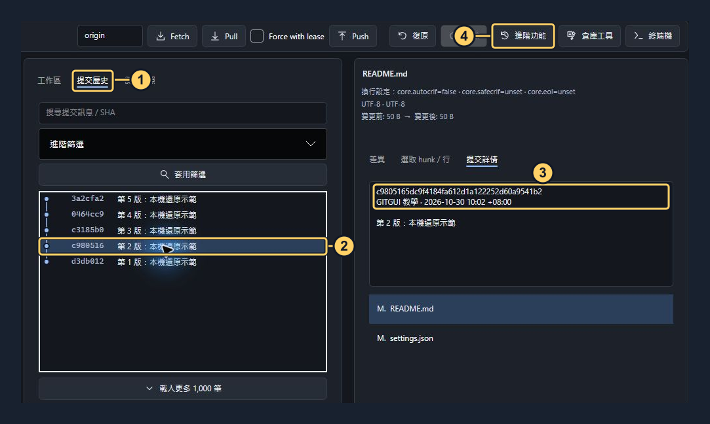
| 圖中編號 |
要做的事 |
| 1 |
點「提交歷史」。 |
| 2 |
點要取回的提交；本例是 第 2 版：本機還原示範。只選取它不會立刻還原工作檔。 |
| 3 |
右側「提交詳情」顯示完整 SHA，可選取 SHA 文字後按 Ctrl+C 複製。本例目標為 c9805165dc9f4184fa612d1a122252d60a9541b2；請使用自己專案的實際 SHA。 |
| 4 |
點「進階功能」。 |
23.4.4 選擇 Hard，核對後執行 Reset
圖 23-D：展開模式選單，選擇 Hard。
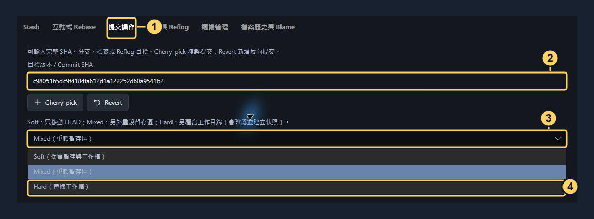
| 圖中編號 |
要做的事 |
| 1 |
在進階視窗點「提交操作」。 |
| 2 |
將完整 SHA 貼到「目標版本 / Commit SHA」。若已自動帶入剛才選取的提交，仍需核對。 |
| 3 |
展開 Reset 模式選單；預設可能是 Mixed，不要直接執行。 |
| 4 |
選擇 Hard（替換工作檔），才會讓暫存區與已追蹤工作檔一起回到目標版本。 |
圖 23-E：再次核對目標與模式，按執行 Reset。
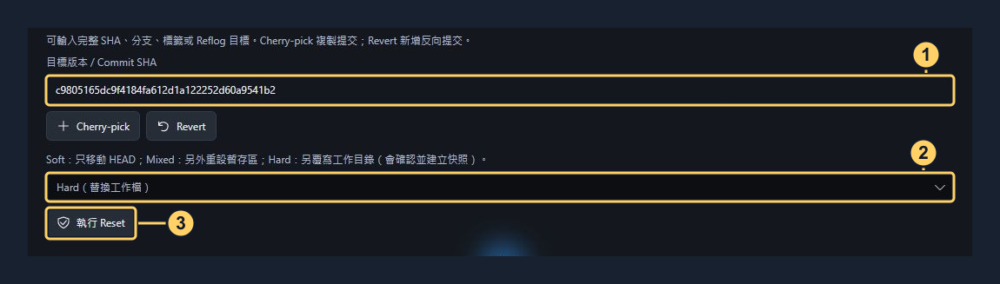
圖中 1 核對完整 SHA；2 確認模式顯示 Hard（替換工作檔）；3 點「執行 Reset」。本流程不要按上方的 Cherry-pick 或 Revert，它們的用途不同。
23.4.5 閱讀確認視窗，等待完成
圖 23-F：核對即將替換的檔案與目前分支將退出的提交。
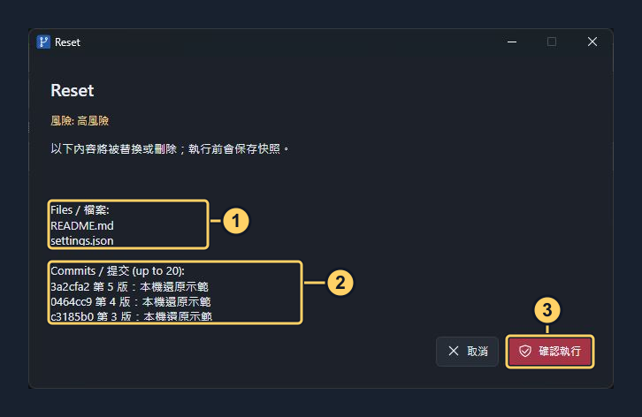
| 圖中編號 |
要做的事 |
| 1 |
核對會替換的檔案；本例為 README.md 與 settings.json。 |
| 2 |
核對 main 將退出的提交；本例列出第 3、4、5 版。它們仍由剛才建立的備用分支保留。 |
| 3 |
確認目前修改已妥善保存、備用分支已建立且目標正確後，按「確認執行」。若有疑慮，按「取消」。 |
GITGUI 執行前會建立安全快照，但備用分支與獨立檔案備份仍應先做好。等待本次操作結束，不要連續重複按 Reset。
圖 23-G：看到完成訊息後，關閉進階視窗。
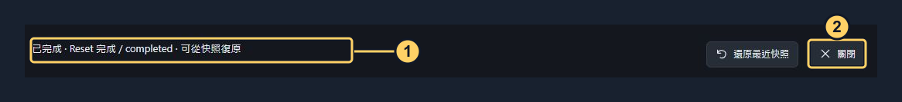
圖中 1 等待出現「已完成 · Reset 完成」；2 按「關閉」回到主畫面。如果顯示錯誤，應先讀取指令輸出並處理原因，不能只因確認視窗消失就當作還原成功。
23.4.6 核對 main 與工作檔已回到第 2 版
**圖 23-H：回到主畫面核對目前分支與目標提交。**為了同時看見兩條分支，本圖已收合左側「分支操作」。
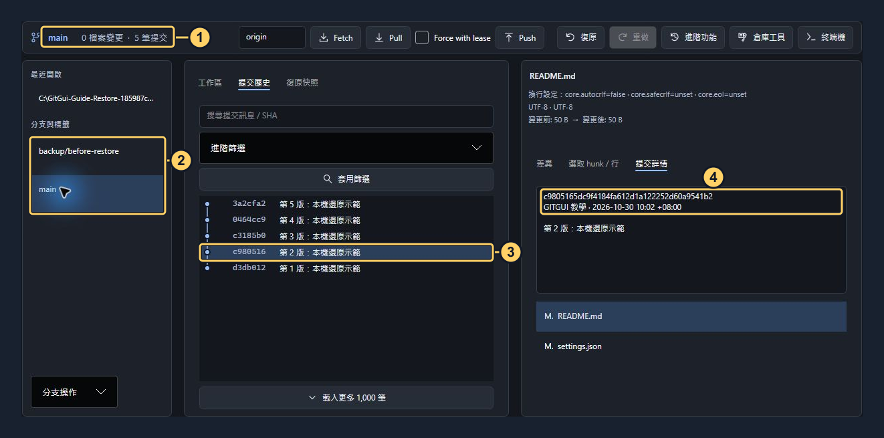
| 圖中編號 |
要做的事 |
| 1 |
確認目前仍在 main，工作區沒有待保存修改。 |
| 2 |
可收合「分支操作」檢查清單；main 與 backup/before-restore 都還在。 |
| 3、4 |
選取目標第 2 版，核對「提交詳情」的 SHA 與步驟 23.4.3 相同。選取歷史只是查閱，還要依下方方式檢查工作檔與分支指向。 |
接著用原本的編輯器開啟專案工作檔，確認內容確實回到目標版本。本例實際核對 README.md 顯示 這是第 2 版。，settings.json 的 version 為 2；main 也已指向第 2 版 SHA。
因為備用分支仍保留第 3～5 版，提交歷史仍可能顯示 5 筆，這不代表還原失敗，也不需要刪掉那些提交。應核對目前分支、工作檔內容與目標 SHA；若要額外查閱指向，可開「進階功能」→「標籤與 Reflog」查看本機 HEAD 移動紀錄。
還原後可以直接在 main 修改、暫存並提交，從第 2 版繼續發展；原來的第 5 版仍保存在備用分支。
23.4.7 想取回原來第 5 版時，切換備用分支
先將當前需要保留的修改提交或另行備份，確認工作區乾淨，再展開左側「分支操作」。
圖 23-I：輸入既有備用分支，按切換。
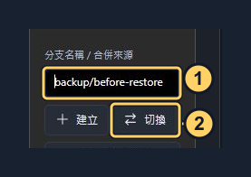
圖中 1 在「分支名稱 / 合併來源」輸入 backup/before-restore；2 按「切換」。這條分支已存在，不必再次按「建立」，也不要按「合併分支」。
圖 23-J：確認已切回保留第 5 版的分支。
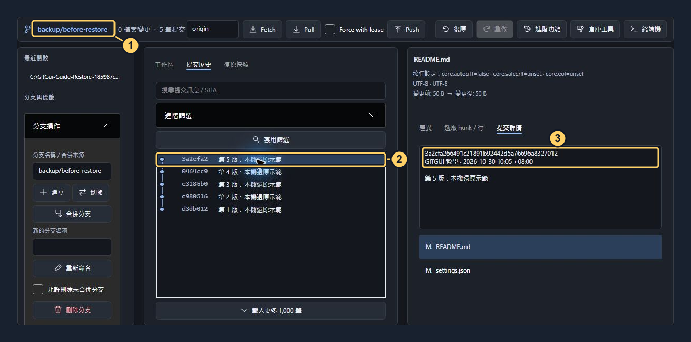
| 圖中編號 |
要做的事 |
| 1 |
確認頂端目前分支已變成 backup/before-restore。 |
| 2、3 |
點第 5 版，核對完整 SHA；本例是 3a2cfa266491c21891b92442d5a76696a8327012。再開啟工作檔，本例 README 與設定值均已回到第 5 版。 |
切換備用分支不會把 main 一起改回第 5 版。 本例最後是 main 保留第 2 版、backup/before-restore 保留第 5 版；需要哪一條版本線，就在保存目前修改後切換過去。
Reset Hard 會移動目前分支，替換暫存區與已追蹤工作檔，可能移除阻擋寫入的未追蹤資料；它不等於清空所有未追蹤／忽略檔案後再做完整資料夾備份還原。若分支已分享或推送，優先考慮 Revert；本機 Reset 不會自動修改伺服器，也不要接著為了對齊而直接強制推送。
Git 官方說明：Restore、Revert、Reset。
24. 完整範例：建立分支並合併回主分支
情境：目前穩定版本在 main，想先在 feature/readme-update 修改說明，確認完成後再合併回 main。若你的主分支叫 master，請把以下 main 換成 master。分支是同一個倉庫中的不同版本線，不是另外複製一份資料夾；切換分支會更新同一工作資料夾內的已追蹤檔案。
本章全程可在本機完成。先有至少一筆成功提交，再建立分支；只有暫存但未提交，還沒有可作為分支起點的版本。
24.1 從 main 建立並切換到新分支
- 開啟專案，確認頂端目前分支是
main，且工作區與暫存區乾淨。若不是 main，先在左側「分支名稱 / 合併來源」輸入 main，按「切換」。
- 展開左側「分支操作」，在「分支名稱 / 合併來源」輸入
feature/readme-update。
- 按「建立」（滑鼠提示為「建立分支」）。新分支從目前
main 的最新提交開始。
- 建立不會自動切換。 保持欄位為
feature/readme-update，再按「切換」。
- 確認頂端目前分支已變成
feature/readme-update，才開始編輯檔案。
也可單擊左側既有分支來填入欄位，再按「切換」。單擊選取分支與實際切換是不同動作，請以頂端目前分支為準。
24.2 在新分支修改、暫存與提交
- 在編輯器開啟專案的
README.md，加入一行 新增功能分支的使用說明。，並儲存。
- 回到 GITGUI 按「重新整理」，再次確認目前分支是
feature/readme-update。
- 在「未暫存」選取
README.md 檢查差異，按「暫存選取」。
- 到「已暫存」確認內容，輸入
補上 README 使用說明，保持「修改上一筆提交」未勾選，按「提交」。
- 確認成功且工作區乾淨。此時新提交屬於功能分支；
main 尚未加入這筆修改。
分支隔離的是提交歷史；尚未提交的工作區修改不會因建立分支就自動被隔離保存。GITGUI 會阻擋帶著已追蹤檔案的未提交修改直接切換／合併；請先提交，或依第 7 章使用 Stash 保存。未追蹤或忽略檔案也可能造成覆蓋衝突，請妥善保存。
24.3 將功能分支合併回 main
合併方向是：先切到接收變更的分支，再指定要合併進來的來源分支。
| 操作階段 |
頂端目前分支 |
「分支名稱 / 合併來源」欄位 |
要按的按鈕 |
| 切回主分支 |
feature/readme-update |
main |
切換 |
| 合併功能修改 |
main |
feature/readme-update |
合併分支 |
- 確認功能分支的修改已提交，沒有進行中的合併／Rebase。
- 在「分支名稱 / 合併來源」輸入
main，按「切換」。確認頂端目前分支為 main。
- 如果此專案有共用遠端，可先依第 21.3 節 Fetch、檢查並整合主分支的遠端更新；只在本機管理就跳過此步。
- 將同一欄位改為
feature/readme-update，保持頂端目前分支為 main，按「合併分支」。這一步不要再按「切換」。
- 等待完成，重新整理，確認仍在
main，開啟 README.md 檢查新增說明，並在歷史中確認功能提交已納入 main。
- 若是 fast-forward，
main 直接推進至功能分支提交，不會多出一筆合併提交；若兩邊都有各自的新提交且可自動整合，通常會產生合併提交。若出現衝突，依下一節處理；不要當作已完成。
簡單情境的版本線如下；字母代表提交，不是檔案名稱：
建立分支後：A (main、feature/readme-update)
功能提交後：A (main) ── B (feature/readme-update)
合併完成後：A ── B (main、feature/readme-update)
合併只變更目前接收分支，來源分支不會自動刪除，也不會自動與之永久同步。之後來源分支新增提交，仍需再次合併。Git 官方的方向與 fast-forward 說明見 Merge 文件。
24.4 合併遇到衝突時怎麼做
如果 main 與功能分支修改了同一段內容，Git 可能要求人工決定。此時保持在 main，不要重新初始化，也不要用 Reset Hard 當作解決衝突。
- 在變更清單選取衝突檔案，查看右側衝突內容。本章的一般合併中，ours 是目前接收的
main，theirs 是來源 feature/readme-update。 Rebase 的含義可能不同，勿直接套用。
- 文字檔可在「可編輯的合併結果」整理最後內容，保留需要的兩邊修改，清除
<<<<<<<、=======、>>>>>>> 衝突標記。
- 按「儲存合併結果」，再按「標記已解決」。多個衝突檔案需逐一完成。
- 確認沒有未解衝突，檢查已暫存的合併結果；在工作區輸入
合併 README 功能分支，保持「修改上一筆提交」未勾選，按「提交」完成合併。
- 核對目前分支仍是
main，檔案可正常使用，歷史有合併提交且包含兩邊變更。
若確定要整檔採其中一邊，可使用「採用 ours」或「採用 theirs」，檢查內容後再「標記已解決」；這會捨去另一邊在該檔案的內容。二進位檔無法以文字編輯合併，需挑選正確版本或使用合適外部工具。
若暫時不想合併，使用「進階功能」中的「中止操作」或主畫面的「中止合併」，回到合併前狀態。合併開始後另外新增的編輯，應先另行保存；不要假設中止會保留它們。
24.5 合併成功後，保留或刪除功能分支
- 合併成功後可以保留功能分支，繼續查閱；刪除不是必要步驟。
- 若要刪除，先確認目前在
main，功能提交已納入且工作區乾淨。
- 在「分支名稱 / 合併來源」輸入
feature/readme-update，保持「允許刪除未合併分支」未勾選，再按「刪除分支」。
- 如果提示尚未合併，先檢查分支與歷史，不要直接改勾強制刪除。正常刪除已合併的本機分支，
main 中已納入的提交與檔案仍保留。
以上只處理本機分支。若之後要上傳已合併結果，確認目前分支是 main，依第 21.3 節檢查遠端再 Push；刪除本機功能分支不會同時刪除遠端分支。
24.6 分支操作常見問題
| 現象 |
檢查方式 |
| 按建立後，頂端仍是 main |
建立與切換是兩步，欄位填新分支後再按「切換」。 |
| 還沒有第一次提交，無法建立分支 |
依第 22.1 節先成功提交，再建立。 |
| 分支已存在 |
從清單選取既有分支並切換，或使用不同名稱，不要重複建立。 |
| 切換／合併被未提交修改擋住 |
先提交或使用 Stash 保存，不要直接捨棄需要的修改。 |
| 合併顯示 Already up to date |
目前分支已包含來源歷史；若預期仍有修改，檢查是否已儲存、暫存並提交在正確來源分支。 |
| 合併後沒有新的 merge 提交 |
可能是 fast-forward；確認 main 已包含功能提交與檔案內容。 |
| 切錯方向，把 main 合併到功能分支 |
這不會更新 main。先完成／中止進行中的操作，確保乾淨，再切回 main，指定功能分支為來源合併。 |
| 合併時再次出現 GPG No secret key |
自動產生合併提交也會讀取 Git 簽章設定；若不需要簽章，依第 22.4 節處理，再依目前狀態完成合併。 |
相關文件：M4 驗收、M4 效能、M3 相容性、ARM 決策、原始規格、Windows 打包。Release：https://github.com/linhercherng/GITGUI/releases。